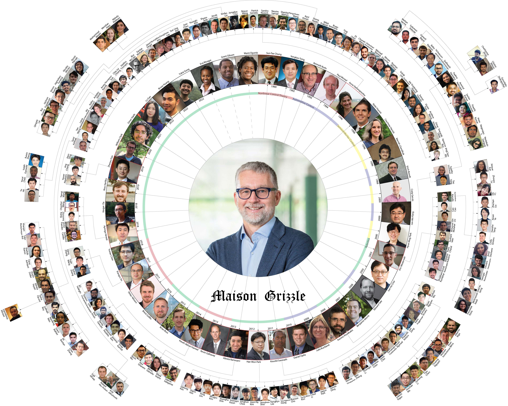
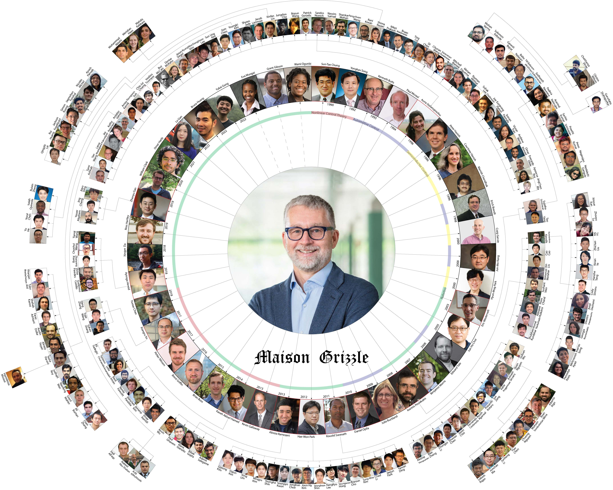

The Grizzle Fest
May 5-6, 2023, University of Michigan, Ann Arbor.
Goal: The goal of The Grizzle Fest is to bring together students, postdocs, collaborators, and other leaders who have had the honor of being influenced by Jessy. Our intent is to get together to celebrate Jessy's 66th birthday as well as his great achievements in nonlinear control and its applications to automotive engineering and robotics; mentorship and teaching the new generation of scientist and engineers in control theory and its applications; culminating in creating the Robotics Institute at Michigan and become the founding director, and so much more.
Topics: The Grizzle Fest features several talks in the broad areas of Jessy's contributions in the fields of nonlinear control theory and its application to automotive engineering, semiconductor manufacturing and robotics. The talks are intermingled with multiple venues for social interactions to provide Jessy to catch up with his contributors and the alumini from his group.
Staff Organizers
Kimberly Mann [Michigan]
Pictures from the Event:

Maison Grizzle: We tried to capture the biggest achievement of Jessy's career in the following diagram: [high-res]
Journey in Pictures
| Grizzle Intro (~5 min) | |
| Grizzle Friends (~4 min) | |
| Grizzle Family (~2 min) | |
| Grizzle Flock (~2 min) | |
| Grizzle Robotics Institute (~4 min) | |
| Grizzle Robots (~3 min) | |
| Grizzle Students (~3 min) | |
| Grizzle Cakes (~2 min) |
Trivia: How well do you know Jessy? Discover fascinating facts and stories about Jessy's incredible life and experiences!
| 07:30-08:30 | Breakfast | |
|---|---|---|
| 08:30-10:00 |
Session #1: Introduction and Leadership
8:30 Welcome - Organizers led by Koushil and Ioannis 8:40 Alec D. Gallimore, Robert J. Vlasic Dean of Engineering - Introducing Jessy Grizzle 8:50 Steven Marcus - Jessy Grizzle: Nonlinear, Stochastic, and French Beginnings 9:10 Dan Koditschek - A Scholar's Path: through Statespace to Statecraft 9:30 Galip Ulsoy - Some Thoughts to Chew on at the Grizzle Fest 9:50 Stephane Lafortune - The Grizzle Hybrid System |
|
| 10:00-10:30 | Coffee Break | |
| 10:30-12:10 |
Session #2: Nonlinear Control Theory (1980s-1990s)
10:30 Harris McClamroch - Jessy Grizzle: From outstanding researcher to academic leader 10:50 Miroslav Krstic - How the Jessuits weaned us off of CLFs and hooked us on CBFs 11:10 Hasan Khalil - Feedback linearization, observers, and performance recovery 11:30 Maria Domenica Di Benedetto - Once upon a time, wih Jessy, from structual properties to singularities 11:50 Dennis Bernstein - Pros and Cons of Discrete-Time Models in Estimation and Control |
|
| 12:10-1:30 |
Lunch Break
Ford Robotics Building Tour Walk Lab Tour Rehab Lab Tour |
|
| 1:30-3:00 |
Session #3: Control of Automotive Systems and Semiconductor Manufacturing (1990s)
1:30 Jeff Cook - Serendipity 1:50 Jim Freudenberg - Jessy Grizzle: History and Influence 2:10 Anna Stefanopoulou - Grizzly Advice on grisly derivatives 2:30 Kenneth Butts - Jessy's Unsung Contribution to Automotive Control 2:35 Erich Brandt - One Student's Journey with Jessy 2:40 Fred Terry - Semiconductor Process Control and turning Jessy into an Experimentalist |
|
| 3:00-3:30 | Coffee Break | |
| 3:30-4:40 | Session #4: Control of Automotive Systems and Semiconductor Manufacturing (2000s)
3:30 Jing Sun* and Ilya Kolmanovsky - Unleashing the Potential of Automotive Powertrains with Dynamic Optimization: The Jessy Grizzle Magic 3:50 Edward Dean Tate - Grizzle’s Advice On Asking The Right Question 3:55 Julia Buckland - From Cornfields to Cars, A Grizzle Transform 4:00 Dan Opila - Trials and Tribulations of Vehicle Testing 4:10 Mario Santillo - From Drivetrains to Digit – A Tribute to Jessy Grizzle 4:30 Ram Vasudevan - From Bipedalism to Barolo: How Jessy Taught Me to Gracefully Grapple with Life's Grizzliest Challenges |
|
| 4:40-6:30 | Break and Transportation | |
| 6:30-9:30 | Dinner at The Pretzel Bell | |
| 07:30-08:30 | Breakfast | |
|---|---|---|
| 08:30-9:45 | Session #5: Robotics (2000s)
8:30 Eric Westervelt - The Origin of Virtual Constraints and Hybrid Zero Dynamics 8:40 James Schmiedeler - Generosity Beyond His Own Students...and What Might Have Been 8:50 Junho Choi - Hybrid Zero Dynamics and beyond 9:00 Ben Morris - Running with RABBIT in Grenoble 9:10 Katie Byl - Crazy Legged Robots: Theory and Practice 9:30 Ioannis Poulakakis - Bouncing ideas off Jessy about robot bouncing: From HZD to compliant HZD and the control of running robots with springs |
|
| 9:50-10:20 | Coffee Break | |
| 10:20-11:55 | Session #6: Robotics (2010s)
10:20 Koushil Sreenath - Close Encounters with Grizzle: The Calculus of Running, CLFs and Stepping Stones 10:40 Hae-Won Park - Michigan Anthropomorphic Biped with Electronic Legs: reaching it's maximum capability 10:50 Alireza Ramezani - How Jessy Grizzle Helped Me Find My Feet in Robotics … Even After Breaking a Few 11:00 Brian Buss 11:05 Ayonga Hereid - Hands-free Dynamic Walking with Hybrid Zero Dynamics 11:15 Bobby Gregg - How Virtual Constraints Unconstrained Prosthetic Control 11:25 Christian Hubicki - Optimal Robot Control: A journey in learning, applying, and teaching optimization 11:35 Kira Barton - Learning from Experience - The Grizzle Way 11:45 Kaveh Akbari Hamed - Virtual Constraint Controllers: From Bipedal to Multi-Agent Quadrupedal Robots |
|
| 11:55-1:30 | Lunch Break
Ford Robotics Building Tour M-Air Drone Flying (weather dependent) |
|
| 1:30-3:00 | Session 7: Nonlinear Control Theory (2010s)
1:30 Aaron Ames - The Grizzly Journey from Hybrid Zero Dynamics to Control Barrier Functions 1:50 Paulo Tabuada - Safe estimation for safe control (or how robots and CBFs can hijack your research) 2:10 Necmiye Ozay - Jessy Grizzle: The Correct-by-Construction Control Guy 2:30 Xiangru Xu - Correctness Guarantees of Compositional Systems 2:40 Tony Bloch - From Smooth to Discrete Symmetries in Control and Robotics |
|
| 3:00-3:30 | Coffee Break | |
| 3:30-4:25 | Session #8: Robotics (2020s)
3:30 Maani Ghaffari - Several true stories and one hypothesis 3:40 Ross Hartley - Contact-aided State Estimation on Lie Groups 3:45 Zhenyu Gan - How to set a robot on fire, transplant its legs, and the biggest lesson I learned 3:55 William Clark - Impacts, images, and shapes 4:05 Lu Gan - When Biped Robotics Lab meets PeRL 4:10 Bruce JK Huang - Transforming bipedal robotics with the synergy of advanced perception and precise control 4:15 Yukai Gong - From "Don't Wait Until It's Perfect" to Wavefield |
|
| 4:20-5:10 | Session #9: Future and Concluding Remarks
4:20 Eva Mungai and Grant Gibson - The Last Leg 4:30 Chad Jenkins - Robotics with Respect: Solving for Equity at the Scale of Life 4:40 Jessy Grizzle - Full TBD: the way Jessy has run his career for 35 years 5:00 Concuding Remarks - Organizing committee led by Aaron and Anna |
|
| 6:30-9:00 | Alumni Dinner | |
| Aaron Ames | Caltech |
| Anna Stefanopoulou | University of Michigan, Ann Arbor |
| Anthony Bloch | University of Michigan, Ann Arbor |
| Alireza Ramezani | Northeastern University |
| Ayonga Hereid | Ohio State University |
| Ben Morris | L3Harris Technologies |
| Brian Buss | Ford |
| Chad Jenkins | University of Michigan, Ann Arbor |
| Christian Hubicki | Florida State University |
| Dan Koditscheck | University of Pennsylvania |
| Edward Dean Tate | Virtus Solis |
| Eric Westervelt | General Electric |
| Eva Mungai | University of Michigan |
| Fred Terry | University of Michigan, Ann Arbor |
| Dan Opila | US Naval Academy |
| Dennis Bernstein | University of Michigan, Ann Arbor |
| Erich Brandt | Vitesco Technologies |
| Galip Ulsoy | University of Michigan |
| Grant Gibson | University of Michigan |
| Hae-Won Park | Korea Advanced Institute of Science and Technology (KAIST) |
| Harris McClamroch | University of Michigan, Ann Arbor |
| Hasan Khalil | Michigan State University |
| Ilya Kolmanovsky | University of Michigan, Ann Arbor |
| Ioannis Poulakakis | University of Delaware |
| Jing Sun | University of Michigan, Ann Arbor |
| James Schmiedeler | University of Notre Dame |
| Jeff Cook | University of Michigan, Ann Arbor |
| Jim Freduenberg | University of Michigan, Ann Arbor |
| Jiunn-Kai (Bruce) Huang | |
| Julia Buckland Seeds | Allison Transmission |
| Junho Choi | Korea Institute of Science and Technology (KIST) |
| Katie Byl | University of California, Santa Barbara |
| Kaveh Akbari Hamed | Virginia Tech |
| Kenneth Butts | Toyota (Retd.) |
| Kira Barton | University of Michigan, Ann Arbor |
| Koushil Sreenath | University of California, Berkeley |
| Lu Gan | Caltech |
| Maani Ghaffari | University of Michigan, Ann Arbor |
| Mario Santillo | Ford |
| Maria Domenica Di Benedetto | University of L'Aquila, Italy |
| Miroslav Krstic | University of California, San Diego |
| Necmiye Ozay | University of Michigan, Ann Arbor |
| Paulo Tabuada | University of California, Los Angeles |
| Ram Vasudevan | University of Michigan, Ann Arbor |
| Robert Gregg | University of Michigan, Ann Arbor |
| Ross Hartley | Amazon |
| Steven Marcus | University of Maryland |
| Stephane Lafortune | University of Michigan, Ann Arbor |
| William Clark | Cornell University |
| Xiangru Xu | University of Wisconsin-Madison |
| Xingye (Dennis) Da | XPeng Robotics |
| Yukai Gong | Figure AI |
| Zhenyu Gan | Syracuse University |
Directions: [Google Maps].
Parking lots: Closest visitor parking lot: NC26 (Naval Architecture & Marine Engineering) [Lot Details], [Google Maps]; Additional North campus parking lots: [list], [map].
Food: Breakfast, lunch and coffee will be available for the workshop participants.
WiFi: MGuest / eduroam
![[high-res]](img/Maison-Grizzle-for-web-high-res.png){kind=link}